Assets
224 files in 8 groups (48.7 MB), with their real names, in project/assets/. Click a tile to open the file.
Logo · Kheelu · Cast · Photo library · Doodles · Crayon · Shapes · Icons
Logo 14 files · project/assets/Logo/
The official Kheelona wordmark, flattened from kheelona.com/brand/kheelona-wordmark.svg in its own colours: Chilli, the logo's orange (#EF762F), for the K, e, e, o and a; Kheelu Blue, the logo's sky blue (#29A0D7), for the K's ear, h, l and n; a white star in the o. v5 had recoloured it to darker shades; v7 (9 Oct 2026) returned every file to the website's colours. All SVGs are single-layer paths with no masks, so they import cleanly into Figma, Keynote, PowerPoint and print tools.
| File | Use |
|---|---|
kheelona-logo.svg |
Day, the default: cream, white and light photos |
kheelona-logo-bedtime.svg |
Bedtime: night grounds, the chalkboard, dark photos. Since v7 it has the same colours as Day, which read on dark grounds (6.1:1+) |
kheelona-logo-sticker.svg |
Day colours on a white cut-out outline, for sunshine, chilli and blue blocks and busy photos |
kheelona-logo-ink.svg |
One colour (ink-900) for print, stamps and embossing |
kheelona-logo-chalk.svg |
All white, for photos and dark fills where colour would clash |
kheelona-mark.svg |
The K alone, for avatars and anywhere the logo would be under 20px tall |
kheelona-app-icon.svg |
The K on a cream rounded square |
app-icon-512.png, apple-touch-icon-180.png |
Full-bleed square icons (the OS rounds the corners) |
favicon-32.png, favicon-48.png |
Browser tab icons |
kheelona-logo@2x.png, -bedtime@2x.png, -sticker@2x.png |
160px-tall PNGs for tools that can't take SVG |
Rules: keep clear space equal to the height of the K's ear on every side; minimum size 20px tall on screen and 6mm in print; never stretch, rotate, outline, add effects, swap the two colours, or place the full-colour logo directly on chilli or blue (use Sticker or Chalk). In code, use the Logo component.
Kheelu 5 files · project/assets/Kheelu/
Real product photography of Kheelu. Use these and never an AI or drawn version of the toy.
kheelu-front.png: the master front cut-out, transparent background, 1080×1324. Use it for composites, web and decks.kheelu-front.webp: the same, compressed (175 KB) for websites.kheelu-front-sticker.png: with a white sticker outline and soft shadow, for crayon blocks,SocialPostandDeckSlide.kheelu-on-fur.jpg: 1600×1600 onfur-100with a contact shadow, for listings, WhatsApp, email and OG images. Make a pure-white version when a marketplace requires it.kheelu-belly-module.png: a crop of the belly unit (speaker, light ring, buttons), for setup guides and "how it works".
Check every use against the anatomy table in Kheelu, the product. Still needed: back and three-quarter views, an in-hand scale shot, the light ring lit and unlit, the packaging and the quick-start card.
Cast 28 files · project/assets/Cast/
The Kheelona cast: five children and Tara's two parents. They are fictional and AI-generated (Nano Banana Pro via ElevenLabs, 8 Oct 2026). Never present them as real customers. Full character sheets and rules are in The cast.
Each person comes in four files:
*-portrait.jpg: the master, 4:5, about 1856×2304, film-look photo against a home wall. Use it as the identity reference when generating new scenes.*-portrait-web.webp: 1000px wide for websites and previews.*-cutout.png: transparent background, about 1100–1230px tall, for compositing.*-sticker.png: the cut-out with a white outline and soft shadow, flat at the bottom crop. Place it on the bottom edge of crayon blocks.
People: myra (3½, Gurugram), advik (4, Chennai), ira (5, Hyderabad), tara (5½, Bengaluru), kabir (6, Lucknow → Noida), meera (mum, 34), arnab (dad, 37).
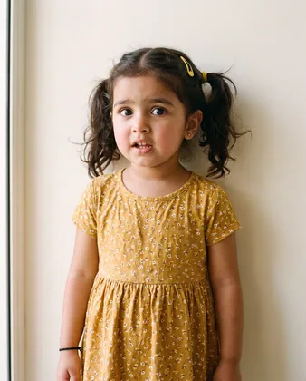
myra-portrait-web.webpWEBP · 112 KB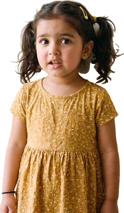
myra-cutout.pngPNG · 1.5 MBmyra-sticker.pngPNG · 1.5 MB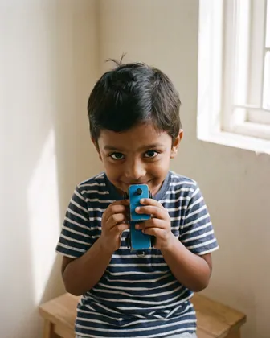
advik-portrait.jpgJPEG · 746 KBadvik-portrait-web.webpWEBP · 66 KB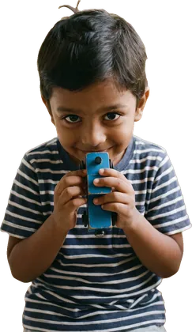
advik-cutout.pngPNG · 1.0 MB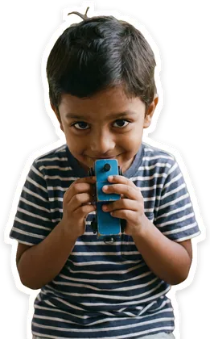
advik-sticker.pngPNG · 1.1 MB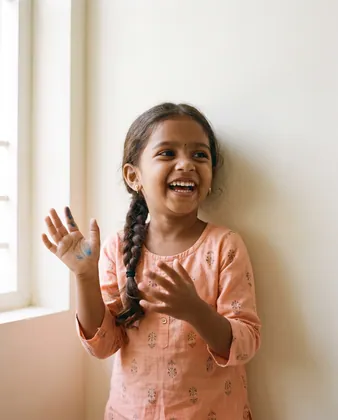
ira-portrait.jpgJPEG · 813 KBira-portrait-web.webpWEBP · 65 KBira-cutout.pngPNG · 1000 KBira-sticker.pngPNG · 1.1 MB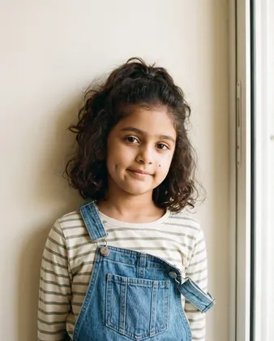
tara-portrait.jpgJPEG · 1.1 MB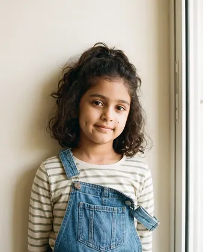
tara-portrait-web.webpWEBP · 123 KB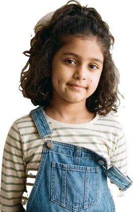
tara-cutout.pngPNG · 1.4 MB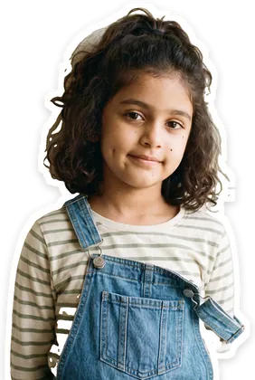
tara-sticker.pngPNG · 1.5 MB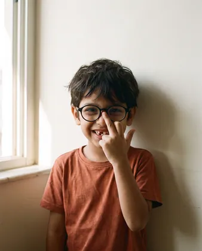
kabir-portrait.jpgJPEG · 892 KBkabir-portrait-web.webpWEBP · 59 KBkabir-cutout.pngPNG · 961 KBkabir-sticker.pngPNG · 1.0 MBmeera-portrait.jpgJPEG · 973 KB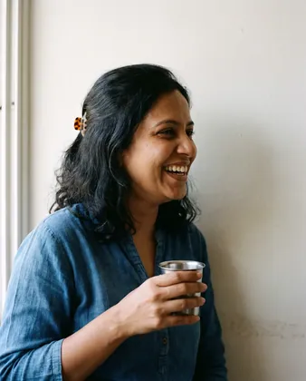
meera-portrait-web.webpWEBP · 94 KB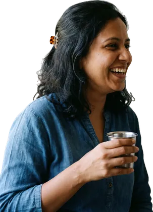
meera-cutout.pngPNG · 1.4 MB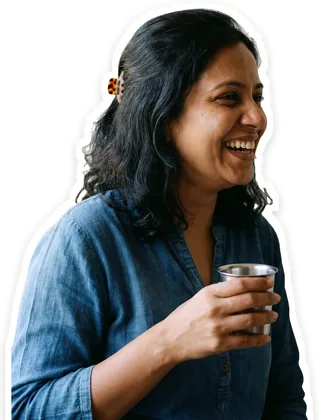
meera-sticker.pngPNG · 1.5 MB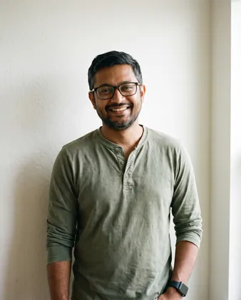
arnab-portrait.jpgJPEG · 1.1 MB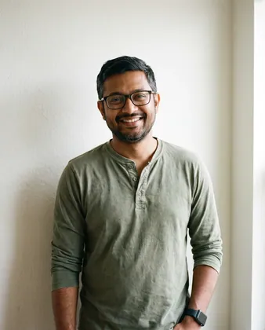
arnab-portrait-web.webpWEBP · 100 KBarnab-cutout.pngPNG · 1.3 MBarnab-sticker.pngPNG · 1.3 MBPhoto library 50 files · project/assets/Photo library/
25 approved photos of the cast: five of each child, shot like a portrait-studio session. Each child keeps exactly the same face, while the room, outfit, light and moment change. All are AI-generated (Nano Banana Pro via ElevenLabs, October 2026) from the Cast portraits and the real Kheelu photo, then checked by hand. The full table (setting, outfit and best use for every photo) and the checks are in The cast under "Photo library".
Per child: three photos with Kheelu (a 4:5 home moment, a 16:9 wide scene with space for a headline, and a third shot) and two without (a play or learning scene, and a 1:1 portrait on a plain coloured wall).
Each photo comes in two files:
<child>-<nn>-<scene>.jpg: the master at 2K (4:5 is 1856×2304, 16:9 is 2752×1536, 9:16 is 1536×2752, 1:1 is 2048×2048). Use it for decks, print and crops.<child>-<nn>-<scene>-web.webp: 1500px on the long edge, for the website, email and previews.
Rules:
- Settings are home, studio sweep or plain wall only. Never add outdoor photos to this group.
- Never mirror, lighten skin, smooth faces or change features.
- Never present these children as customers or put them next to a testimonial.
- Add a new photo only if it will be reused at least three times. Make it with Making cast photos (step by step), which has the exact prompts, checks and export script, and log it in
tools/photo/library-log.json.
 myra-01-breakfast-why.jpgJPEG · 777 KB
myra-01-breakfast-why.jpgJPEG · 777 KB myra-01-breakfast-why-web.webpWEBP · 140 KB
myra-01-breakfast-why-web.webpWEBP · 140 KB myra-02-monsoon-window.jpgJPEG · 913 KB
myra-02-monsoon-window.jpgJPEG · 913 KB myra-02-monsoon-window-web.webpWEBP · 124 KB
myra-02-monsoon-window-web.webpWEBP · 124 KB myra-03-bedtime-cuddle.jpgJPEG · 871 KB
myra-03-bedtime-cuddle.jpgJPEG · 871 KB myra-03-bedtime-cuddle-web.webpWEBP · 116 KB
myra-03-bedtime-cuddle-web.webpWEBP · 116 KB myra-04-drawing-at-home.jpgJPEG · 695 KB
myra-04-drawing-at-home.jpgJPEG · 695 KB myra-04-drawing-at-home-web.webpWEBP · 112 KB
myra-04-drawing-at-home-web.webpWEBP · 112 KB myra-05-portrait.jpgJPEG · 604 KB
myra-05-portrait.jpgJPEG · 604 KB myra-05-portrait-web.webpWEBP · 109 KB
myra-05-portrait-web.webpWEBP · 109 KB advik-01-counting-carriages.jpgJPEG · 651 KB
advik-01-counting-carriages.jpgJPEG · 651 KB advik-01-counting-carriages-web.webpWEBP · 105 KB
advik-01-counting-carriages-web.webpWEBP · 105 KB advik-02-whispering-to-kheelu.jpgJPEG · 548 KB
advik-02-whispering-to-kheelu.jpgJPEG · 548 KB advik-02-whispering-to-kheelu-web.webpWEBP · 61 KB
advik-02-whispering-to-kheelu-web.webpWEBP · 61 KB advik-03-studio-hug.jpgJPEG · 496 KB
advik-03-studio-hug.jpgJPEG · 496 KB advik-03-studio-hug-web.webpWEBP · 62 KB
advik-03-studio-hug-web.webpWEBP · 62 KB advik-04-floor-train.jpgJPEG · 629 KB
advik-04-floor-train.jpgJPEG · 629 KB advik-04-floor-train-web.webpWEBP · 52 KB
advik-04-floor-train-web.webpWEBP · 52 KB advik-05-portrait.jpgJPEG · 481 KB
advik-05-portrait.jpgJPEG · 481 KB advik-05-portrait-web.webpWEBP · 58 KB
advik-05-portrait-web.webpWEBP · 58 KB ira-01-story-on-the-bed.jpgJPEG · 772 KB
ira-01-story-on-the-bed.jpgJPEG · 772 KB ira-01-story-on-the-bed-web.webpWEBP · 126 KB
ira-01-story-on-the-bed-web.webpWEBP · 126 KB ira-02-drawing-the-dragon.jpgJPEG · 640 KB
ira-02-drawing-the-dragon.jpgJPEG · 640 KB ira-02-drawing-the-dragon-web.webpWEBP · 74 KB
ira-02-drawing-the-dragon-web.webpWEBP · 74 KB ira-03-festive-evening-song.jpgJPEG · 747 KB
ira-03-festive-evening-song.jpgJPEG · 747 KB ira-03-festive-evening-song-web.webpWEBP · 69 KB
ira-03-festive-evening-song-web.webpWEBP · 69 KB ira-04-paper-crown.jpgJPEG · 705 KB
ira-04-paper-crown.jpgJPEG · 705 KB ira-04-paper-crown-web.webpWEBP · 96 KB
ira-04-paper-crown-web.webpWEBP · 96 KB ira-05-portrait.jpgJPEG · 677 KB
ira-05-portrait.jpgJPEG · 677 KB ira-05-portrait-web.webpWEBP · 84 KB
ira-05-portrait-web.webpWEBP · 84 KB tara-01-naming-feelings.jpgJPEG · 834 KB
tara-01-naming-feelings.jpgJPEG · 834 KB tara-01-naming-feelings-web.webpWEBP · 140 KB
tara-01-naming-feelings-web.webpWEBP · 140 KB tara-02-evening-with-amma.jpgJPEG · 621 KB
tara-02-evening-with-amma.jpgJPEG · 621 KB tara-02-evening-with-amma-web.webpWEBP · 68 KB
tara-02-evening-with-amma-web.webpWEBP · 68 KB tara-03-bedtime-with-baba.jpgJPEG · 842 KB
tara-03-bedtime-with-baba.jpgJPEG · 842 KB tara-03-bedtime-with-baba-web.webpWEBP · 115 KB
tara-03-bedtime-with-baba-web.webpWEBP · 115 KB tara-04-reading-nook.jpgJPEG · 756 KB
tara-04-reading-nook.jpgJPEG · 756 KB tara-04-reading-nook-web.webpWEBP · 116 KB
tara-04-reading-nook-web.webpWEBP · 116 KB tara-05-portrait.jpgJPEG · 841 KB
tara-05-portrait.jpgJPEG · 841 KB tara-05-portrait-web.webpWEBP · 155 KB
tara-05-portrait-web.webpWEBP · 155 KB kabir-01-imagining-space.jpgJPEG · 722 KB
kabir-01-imagining-space.jpgJPEG · 722 KB kabir-01-imagining-space-web.webpWEBP · 57 KB
kabir-01-imagining-space-web.webpWEBP · 57 KB kabir-02-block-rocket.jpgJPEG · 860 KB
kabir-02-block-rocket.jpgJPEG · 860 KB kabir-02-block-rocket-web.webpWEBP · 76 KB
kabir-02-block-rocket-web.webpWEBP · 76 KB kabir-03-homework-desk.jpgJPEG · 576 KB
kabir-03-homework-desk.jpgJPEG · 576 KB kabir-03-homework-desk-web.webpWEBP · 64 KB
kabir-03-homework-desk-web.webpWEBP · 64 KB kabir-04-planet-book.jpgJPEG · 729 KB
kabir-04-planet-book.jpgJPEG · 729 KB kabir-04-planet-book-web.webpWEBP · 71 KB
kabir-04-planet-book-web.webpWEBP · 71 KB kabir-05-portrait.jpgJPEG · 633 KB
kabir-05-portrait.jpgJPEG · 633 KB kabir-05-portrait-web.webpWEBP · 131 KB
kabir-05-portrait-web.webpWEBP · 131 KBDoodles 32 files · project/assets/Doodles/
Hand-drawn line art for the Imagination layer: rough, double-stroked and lightly grainy, with no fills.
chalk-*.svgare drawn inchalk(#ffffff). Use them on the ink chalkboard (ink-900) or on dark areas of photos.ink-*.svgare drawn inink-900(#2a2118). Use them on light photos and fur grounds.
Shapes in both inks: astronaut-helmet, rocket, planet, star, sun, rainbow, crown, heart, music-notes, book-open, thought-cloud, speech-bubble, question-mark, spark-lines, swirl, arrow-curly.
Use 3–5 per frame with one hero, and never across a face. Place them with ImaginationFrame (percentage positions). New doodles must match this stroke style (3–4.5px rough line at 1080px, round caps, no fills).
chalk-arrow-curly.svgSVG · 3 KB
chalk-astronaut-helmet.svgSVG · 12 KB
chalk-book-open.svgSVG · 4 KB
chalk-crown.svgSVG · 3 KB chalk-heart.svgSVG · 2 KBchalk-music-notes.svgSVG · 8 KB
chalk-heart.svgSVG · 2 KBchalk-music-notes.svgSVG · 8 KB
chalk-planet.svgSVG · 5 KBchalk-question-mark.svgSVG · 1 KB
chalk-rainbow.svgSVG · 2 KB
chalk-rocket.svgSVG · 7 KB chalk-spark-lines.svgSVG · 3 KBchalk-speech-bubble.svgSVG · 4 KBchalk-star.svgSVG · 4 KB
chalk-spark-lines.svgSVG · 3 KBchalk-speech-bubble.svgSVG · 4 KBchalk-star.svgSVG · 4 KB
chalk-sun.svgSVG · 8 KB
chalk-swirl.svgSVG · 2 KBchalk-thought-cloud.svgSVG · 8 KB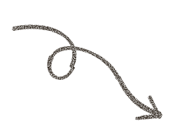
ink-arrow-curly.svgSVG · 3 KB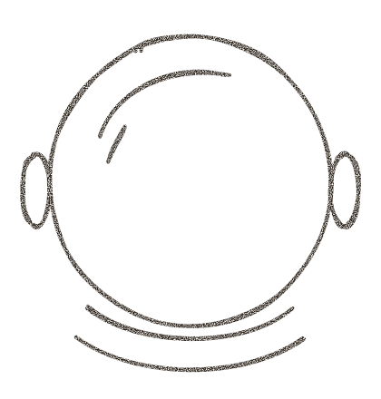
ink-astronaut-helmet.svgSVG · 12 KB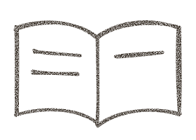
ink-book-open.svgSVG · 4 KB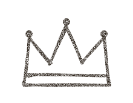
ink-crown.svgSVG · 3 KB ink-heart.svgSVG · 2 KBink-music-notes.svgSVG · 8 KB
ink-heart.svgSVG · 2 KBink-music-notes.svgSVG · 8 KB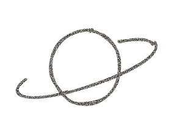
ink-planet.svgSVG · 5 KB ink-question-mark.svgSVG · 1 KB
ink-question-mark.svgSVG · 1 KB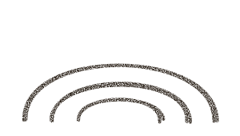
ink-rainbow.svgSVG · 2 KB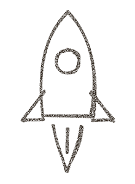
ink-rocket.svgSVG · 7 KB ink-spark-lines.svgSVG · 3 KBink-speech-bubble.svgSVG · 4 KB
ink-spark-lines.svgSVG · 3 KBink-speech-bubble.svgSVG · 4 KB ink-star.svgSVG · 4 KB
ink-star.svgSVG · 4 KB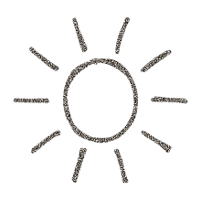
ink-sun.svgSVG · 8 KB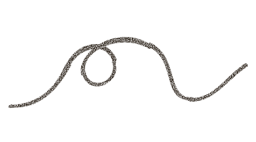
ink-swirl.svgSVG · 2 KB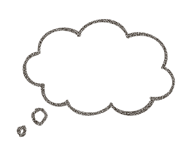
ink-thought-cloud.svgSVG · 8 KBCrayon 10 files · project/assets/Crayon/
Textured crayon marks for one word or number, in the three brand colours (Chilli #EF762F, Kheelu Blue #29A0D7, Sunshine #FFCF4D), with the colour baked in:
highlight-sun.svg(sun-500): a marker swipe behind a headline word.underline-chilli.svg,underline-blue.svg,underline-sun.svg: a single underline (the sunshine one is double).circle-chilli.svg,circle-blue.svg: a loop around a price or number.squiggle-blue.svg(blue-500),zigzag-chilli.svg(chilli-500): edge decoration on social posts.scribble-sun.svg: a playful corner for kid-facing pieces.burst-sun.svg: sun rays behind the product on a plain ground.
In code, use Kheelona.Mark (tone chilli, blue or sun) instead of these files. Use one mark per headline and never under body copy. Chilli marks circle prices and offers; blue and sunshine marks are for everything else.
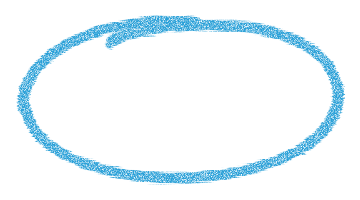
circle-blue.svgSVG · 2 KB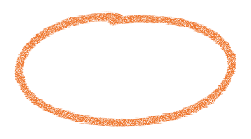
circle-chilli.svgSVG · 2 KBhighlight-sun.svgSVG · 1 KB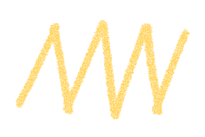
scribble-sun.svgSVG · 3 KBsquiggle-blue.svgSVG · 3 KBunderline-blue.svgSVG · 1 KBunderline-chilli.svgSVG · 2 KBunderline-sun.svgSVG · 2 KBzigzag-chilli.svgSVG · 4 KBShapes 9 files · project/assets/Shapes/
Flat cut-paper shapes with slightly hand-cut edges, in the brand colours:
- Kheelu Blue (
blue-500, #29A0D7):cloud-blue,blob-blue,ribbon-blue - Chilli (
chilli-500, #EF762F):flower-chilli(sunshine centre),half-round-chilli,heart-chilli - Sunshine (
sun-500):sun-sun,star-sun - Rainbow:
rainbow-arch, the one shape in Kheelu's ear colours and the only rainbow in layouts.
They go behind products and children as a soft stage. Use at most two per view, in one brand colour (plus the rainbow arch if you need it), never touching text. They may bleed off the edge. Never recolour them.


Icons 76 files · project/assets/Icons/
76 Phosphor Icons in the Bold weight (MIT licence), as single-ink SVGs filled with ink-900 (#2a2118), because <img> cannot inherit currentColor.
In code, use Kheelona.Icon (the same 76 icons, currentColor, any token colour). In design tools, use these files and recolour only to ink-900 or chalk (white). Kheelu Blue icons are too light on cream (2.7:1): for a blue moment, put an ink icon in a Kheelu Blue circle.
Sizes: 16 (chips), 20 (buttons, rows), 24 (standalone), 40 inside a brand-colour circle (feature cards). Feelings: question (Curious), smiley-angry (Grumpy), smiley-sad (Sad), smiley-wink (Silly), smiley (Joy). Never use icons that signal "AI" (brains, chips, sparkles, robots).
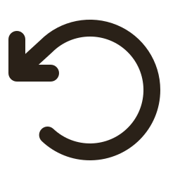
arrow-counter-clockwise.svgSVG · 1 KB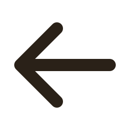
arrow-left.svgSVG · 1 KB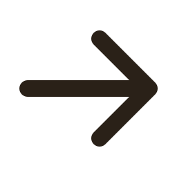
arrow-right.svgSVG · 1 KB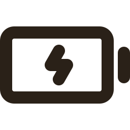
battery-charging.svgSVG · 1 KB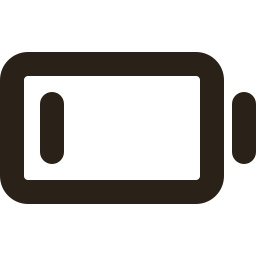
battery-low.svgSVG · 1 KBbell.svgSVG · 1 KBbluetooth.svgSVG · 1 KBbook-open.svgSVG · 1 KBcalculator.svgSVG · 1 KBcalendar-check.svgSVG · 1 KBcaret-down.svgSVG · 1 KBcaret-left.svgSVG · 1 KBcaret-right.svgSVG · 1 KBcaret-up.svgSVG · 1 KBchart-line-up.svgSVG · 1 KBchat-circle-dots.svgSVG · 1 KBcheck-circle.svgSVG · 1 KBcheck.svgSVG · 1 KBclock.svgSVG · 1 KBcopy.svgSVG · 1 KBcurrency-inr.svgSVG · 1 KBdots-three-vertical.svgSVG · 1 KBdots-three.svgSVG · 1 KBdownload-simple.svgSVG · 1 KBenvelope-simple.svgSVG · 1 KBeye-slash.svgSVG · 1 KBeye.svgSVG · 1 KBfunnel.svgSVG · 1 KBgear.svgSVG · 2 KBgraduation-cap.svgSVG · 1 KBhand-heart.svgSVG · 1 KBheart.svgSVG · 1 KBhouse.svgSVG · 1 KBimage.svgSVG · 1 KBinfo.svgSVG · 1 KBinstagram-logo.svgSVG · 1 KBlink-simple.svgSVG · 1 KBlist.svgSVG · 1 KBlock-simple.svgSVG · 1 KBmagnifying-glass.svgSVG · 1 KBmap-pin.svgSVG · 1 KBmicrophone-slash.svgSVG · 1 KBmicrophone.svgSVG · 1 KBminus.svgSVG · 1 KBmoon.svgSVG · 1 KBmusic-notes.svgSVG · 1 KBpackage.svgSVG · 1 KBpause.svgSVG · 1 KBpencil-simple.svgSVG · 1 KBplant.svgSVG · 1 KBplay.svgSVG · 1 KBplus.svgSVG · 1 KBpuzzle-piece.svgSVG · 1 KBquestion.svgSVG · 1 KBshare-network.svgSVG · 1 KBshield-check.svgSVG · 1 KBsign-out.svgSVG · 1 KBsliders-horizontal.svgSVG · 1 KBsmiley-angry.svgSVG · 1 KBsmiley-sad.svgSVG · 1 KBsmiley-wink.svgSVG · 1 KBsmiley.svgSVG · 1 KBspeaker-high.svgSVG · 1 KBstar.svgSVG · 1 KBsun.svgSVG · 1 KBtranslate.svgSVG · 1 KBtrash.svgSVG · 1 KBtruck.svgSVG · 1 KBuser.svgSVG · 1 KBusers-three.svgSVG · 1 KBwarning-circle.svgSVG · 1 KBwhatsapp-logo.svgSVG · 1 KBwifi-high.svgSVG · 1 KBwifi-slash.svgSVG · 1 KBx.svgSVG · 1 KByoutube-logo.svgSVG · 1 KB